Guarda, manutenção, compra e venda de embarcações há mais de 40 anos, onde o Rio Una encontra o mar.
Barra do Una, São Sebastião (SP)
Segunda a domingo, das 8h às 17h
Marina Boreste
Mais de 40 anos
no Rio Una
Com a Marina Boreste você navega tranquilo em uma das mais belas regiões do litoral paulista. Conte com a estrutura e o apoio de quem tem mais de 40 anos de experiência nas águas de Barra do Una.
- Horário
- Segunda a domingo, das 8h às 17h
- Telefone e WhatsApp
- (12) 99729-2082
- Rádio
- VHF canal 74, da primeira saída ao último retorno

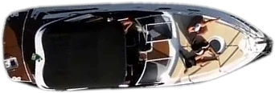
Do galpão
ao mar aberto
A rampa
A embarcação desce para a água a pedido do proprietário, sempre na ordem de chegada dos pedidos.
A barra do Rio Una
Águas abrigadas e praticamente doces até a boca do rio, com o píer de abastecimento a 300 m.
O mar aberto
As ilhas entre Bertioga e Ilhabela, com escuta no rádio VHF, canal 74, até o retorno do último navegante.
Boreste é o lado
direito do barco
Na linguagem do mar, boreste é o lado direito de quem olha para a proa, marcado à noite por uma luz verde. O esquerdo é bombordo, de luz vermelha.
No código internacional de sinais, a bandeira E diz “estou guinando para boreste”. Gire o timão e veja o barco obedecer.

Serviços
Tudo o que a sua embarcação precisa em terra e no mar, do galpão ao retorno do último navegante.
-
Garageamento
As embarcações são manobradas em suas carretas e guardadas nos galpões em vaga seca, coberta, com piso impermeável.

-
Rampagem
A colocação ou retirada da embarcação da água é feita a pedido do proprietário, ou de pessoa por ele autorizada. As solicitações podem ser feitas diretamente na recepção da Marina Boreste, por telefone e e-mail.
Sempre é respeitada a ordem de chegada dos pedidos. Este serviço é exclusivo para clientes da Marina.

-
Lavagem
Sempre que necessário, as embarcações são lavadas por profissionais especializados e treinados. Neste processo são utilizados produtos biodegradáveis em quantidades adequadas, conforme as orientações do “Projeto Marinas”.
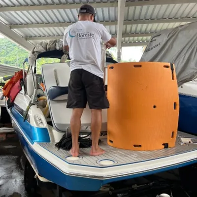
-
Acionamento
Uma vez por semana as embarcações são acionadas no seco por um profissional especialmente treinado para esta função. O intuito é checar não só o funcionamento do motor, mas também diversos outros itens importantes para uma navegação segura.
O cliente fica sabendo com antecedência caso alguma anomalia seja identificada.
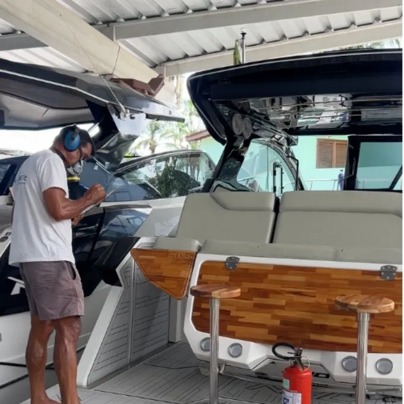
-
Apoio de rádio
Para maior segurança dos clientes, a Marina Boreste mantém escuta via rádio VHF, canal 74, e também telefones, desde o momento da saída do primeiro navegante para o mar até o retorno do último.
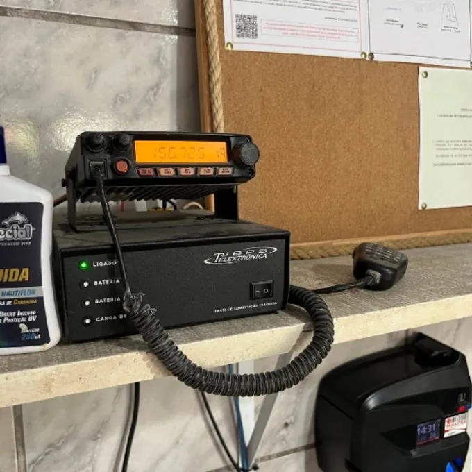
-
Resgate
Em caso de pane no mar, o serviço de resgate poderá ser solicitado sem custos adicionais. Este serviço é prestado por embarcação especialmente preparada, sujeito a regras de horário, área de cobertura, condições de mar e maré, conforme descrito no Regulamento Interno da Marina Boreste.
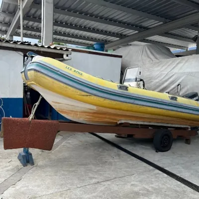
-
Bebidas e gelo
Gelo e bebidas, para levar a bordo ou consumir no bar da Marina Boreste, também podem ser adquiridos.
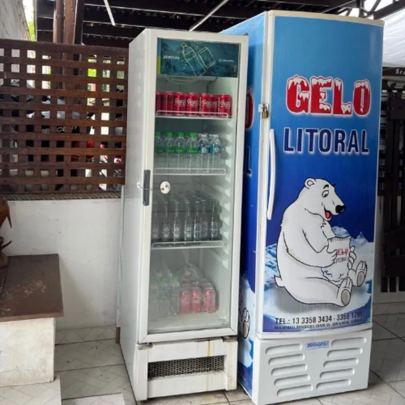
-
Abastecimento
No canal de Barra do Una, a aproximadamente 300 m da Marina Boreste, no sentido de quem navega para o mar, existe um píer de abastecimento aberto ao público, onde se pode adquirir diesel ou gasolina.
Caso o cliente prefira trazer o seu próprio combustível, a Marina Boreste disponibiliza bomba especial para transferência de líquidos, para que abasteça seu barco com total segurança.
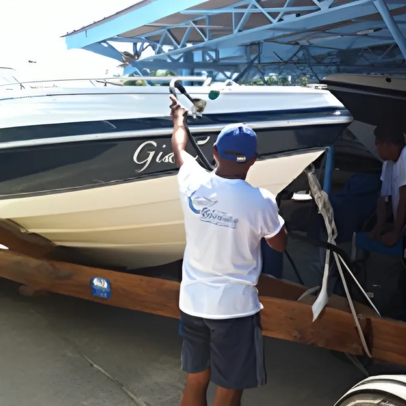
-
Segurança
Além de monitoramento 24 horas por sistema de câmeras, vigia noturno e cão de guarda, a Marina Boreste mantém apólice de seguro com cobertura completa para todas as embarcações, enquanto estiverem sob sua responsabilidade.
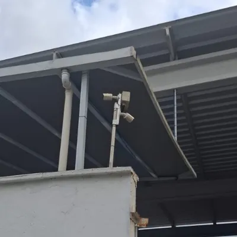
Infraestrutura
Galpões, píer, rampa, oficina e uma área de lazer à beira do Rio Una, dentro dos padrões do “Projeto Marinas” e das regulamentações da CETESB.
Garagem náutica
Com 3.000 m² de área, os galpões da Marina Boreste foram projetados visando a máxima proteção das embarcações.
Pisos impermeáveis, canaletas e caixas separadoras de água e óleo devidamente instaladas mantêm a Marina Boreste dentro dos padrões do “Projeto Marinas” e em conformidade com as regulamentações da CETESB.
Guarda embarcações de até 10 toneladas, entre jets, infláveis e lanchas, sem a necessidade de empilhamento.
-
Garagem náutica
Com 3.000 m² de área, os galpões da Marina Boreste foram projetados visando a máxima proteção das embarcações.
Pisos impermeáveis, canaletas e caixas separadoras de água e óleo devidamente instaladas mantêm a Marina Boreste dentro dos padrões do “Projeto Marinas” e em conformidade com as regulamentações da CETESB.
Guarda embarcações de até 10 toneladas, entre jets, infláveis e lanchas, sem a necessidade de empilhamento.
-
Amplo píer
Amplo píer de atracação, com área exclusiva para embarque e desembarque, situado nas águas abrigadas e praticamente doces do Rio Una.
Capacidade para atender aos clientes que, com o intuito de agilizar a saída no dia seguinte, prefiram o pernoite da embarcação na água com total segurança.
-
Rampa
A colocação e a retirada das embarcações são feitas pela rampa de acesso.
Dois sistemas distintos estão disponíveis para garantir maior segurança e risco zero de interrupção nas operações.
A Marina Boreste dispõe de tratores que podem trabalhar simultaneamente, agilizando a operação.
-
Recepção e conveniência
A entrada da Marina conta com um balcão de atendimento com rádio, TV e acesso ao EasyMarine, por onde acompanhamos todos os processos em tempo real.
Além da área de atendimento, é possível conferir o mapa da região, verificar as condições de navegação atualizadas semanalmente e adquirir bebidas geladas e gelo para o seu passeio.
-
Lazer e conforto
Uma agradável área junto às margens do Rio Una, reservada para o conforto e o lazer dos navegantes e de sua família.
Sentado no bar à beira da piscina, é possível relaxar curtindo a linda vista do rio e da Mata Atlântica, sem deixar de navegar pela internet com o Wi-Fi disponível.
-
Oficina e maquinário
Espaço destinado a reparos de embarcações, equipado com diversas ferramentas: talha, compressor, carregador de baterias, bomba de combustível, macacos hidráulicos, lavadora de alta pressão etc.
Desde os anos 70
Não havia telefone celular nem GPS, não havia previsão do tempo e às vezes nem estradas.
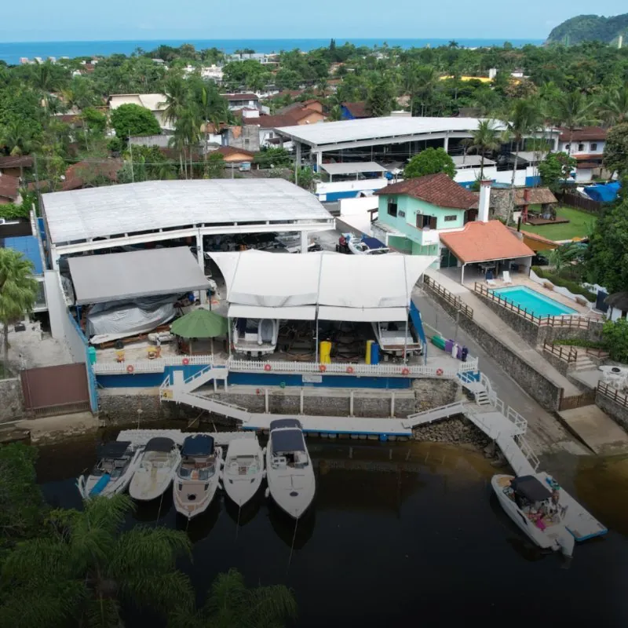
Missão. Proporcionar infraestrutura e serviços ideais para a guarda, manutenção, compra e venda de embarcações, sempre em harmonia com o meio ambiente, para que os clientes possam desfrutar da natureza e dos prazeres da atividade náutica.
- 40+ anos
- de experiência nas águas de Barra do Una
- 3.000 m²
- de galpões na garagem náutica
- 10 t
- por embarcação, sem empilhamento
- 24 h
- de monitoramento por câmeras
Meados dos anos 70
Mas mesmo assim, em meados da década de 70, Amandio Alves Pinto, um apaixonado pelo mar, saía com o seu barco navegando pela barra do Rio Una, mar afora, atraído pelas belezas do litoral norte de São Paulo.
Um ponto de apoio
Foi por esta paixão e pelo seu espírito visionário que, ainda nesta época, ele começou a desenvolver em sua propriedade, na beira do Rio Una, as primeiras atividades náuticas da Marina Boreste, sendo ponto de apoio para amigos e outros navegantes.
Com o tempo
A necessidade de facilitar o acesso a outros amantes do mar se tornava mais latente, e a Marina Boreste, acompanhando esta tendência, se organizava e se estruturava para atender os seus clientes cada vez melhor.
Hoje
Administrada pela família, a Marina Boreste continua investindo constantemente em melhorias, está consolidada no mercado, e a satisfação dos seus clientes é a comprovação da qualidade de seus serviços.
E é neste clima de pioneirismo, amizade, honestidade e respeito à natureza que a Marina Boreste assume o compromisso de manter a sua embarcação sempre em boas mãos.
Pousada Una,
a 50 metros daqui
Parceira da marina e parte do mesmo empreendimento, na mesma rua.
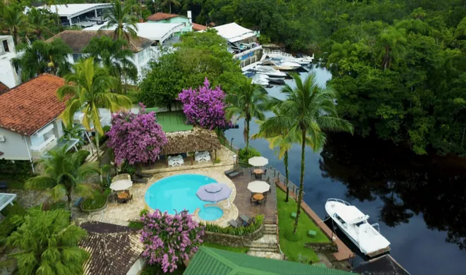
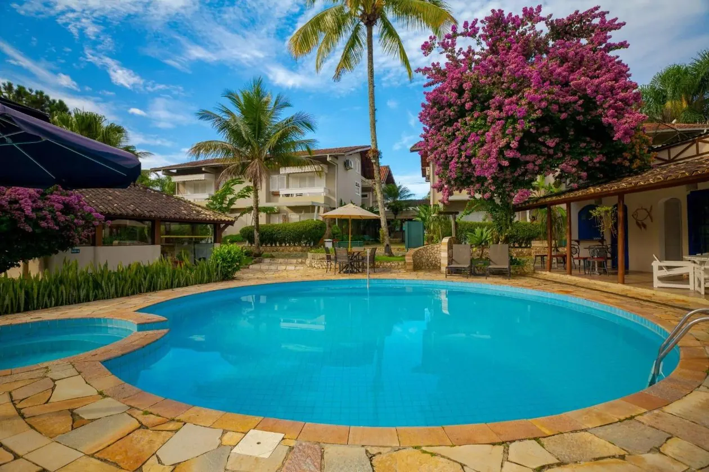
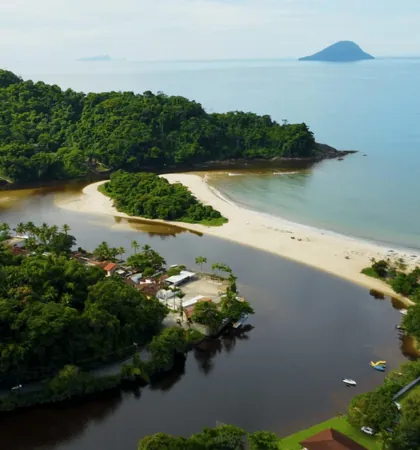
Pousada e restaurante à beira do Rio Una, com acomodações confortáveis, piscina, deck voltado para o rio, jardim arborizado e píer para embarcações.
Clientes da Marina Boreste têm benefícios exclusivos na hospedagem e acesso ao restaurante da pousada, uma boa pedida para o almoço depois do passeio de barco.
- Reservas
- (12) 3867-1515
- @pousadauna (abre em nova aba)
Embarcações à venda
Os preços são negociáveis, e todo o atendimento é feito pelo WhatsApp.
Para ver as embarcações à venda, pergunte à nossa atendente pelo WhatsApp (abre em nova aba).
Entre Bertioga
e Ilhabela
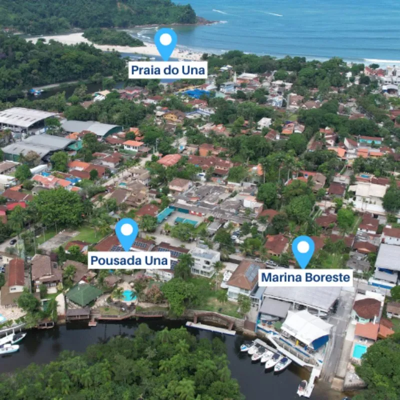
Localizada em Barra do Una, no litoral norte do estado de São Paulo, estamos entre o Rio Una e o mar. A Marina Boreste proporciona acesso facilitado às diversas ilhas da região entre Bertioga e Ilhabela.
Rotas
- De São Paulo
- Rodovia dos Imigrantes
- Mogi-Bertioga
- Rodovia dos Tamoios
- Dica
- Conheça a Rota 55 do litoral paulista e seus encantos
- Do mar
- 23°45′29,0″S 45°45′40,2″W
- Decimal
- -23.758062, -45.761177
- Rádio
- VHF canal 74
- primeira saída ao último retorno
- Combustível
- Píer público no canal
- 300 m, sentido mar
- Endereço
- Rua Petrópolis, 215, Barra do Una, São Sebastião (SP), CEP 11624-179
Vamos conversar?
Fale com a gente sobre vagas, serviços, embarcações à venda ou o benefício na Pousada Una.
- Endereço
- Rua Petrópolis, 215, Barra do Una, São Sebastião (SP)
- Horário
- Segunda a domingo, das 8h às 17h
- Telefone
- (12) 3867-1550 · (12) 99729-2082